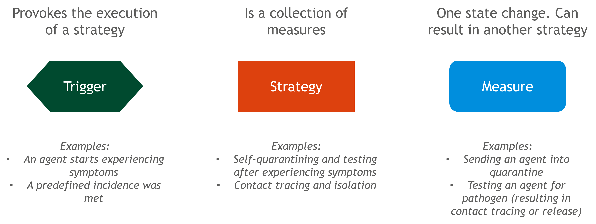
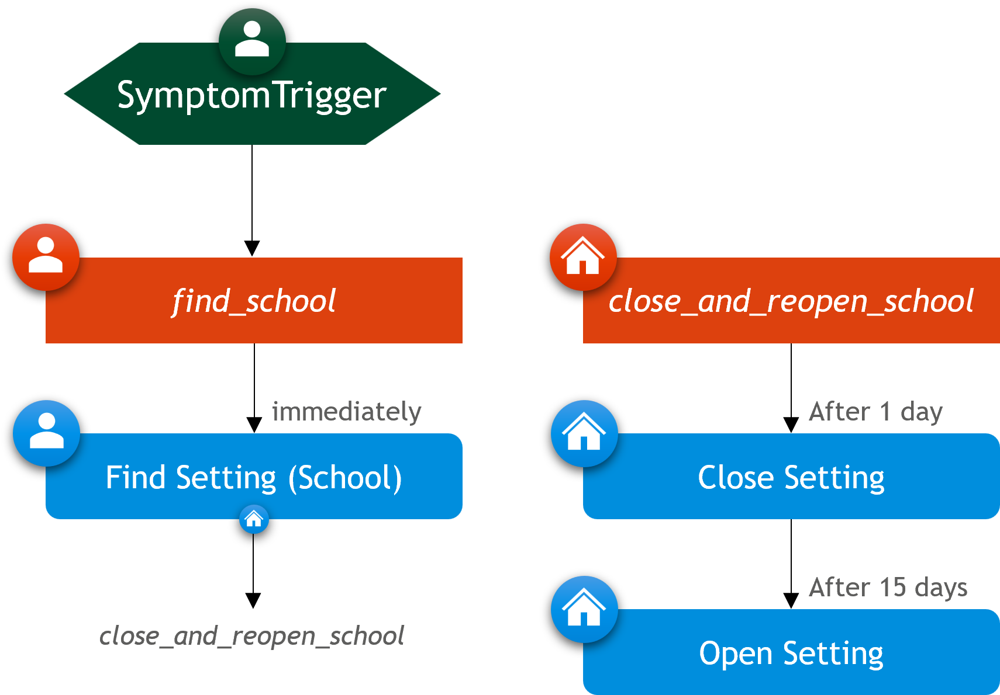
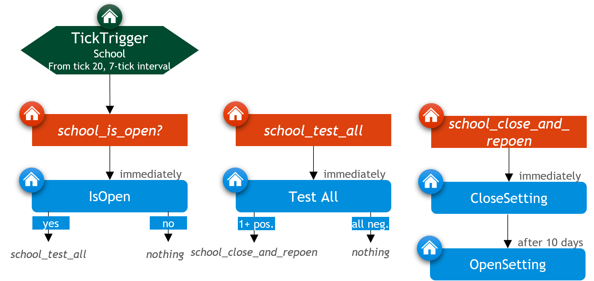

Base Intervention Model
GEMS models non-pharmaceutical interventions (NPIs) — such as testing, isolation, or setting closures — using a conceptual framework based on the idea of Trigger → Strategy → Measure, abbreviated as TriSM.
This logic forms the foundation for how interventions are defined and applied during a simulation:
- Triggers determine when an intervention should be activated.
- Strategies represent defined response plans that organize one or more measures.
- Measures implement the actual effect on the simulation.
The TriSM pattern separates decision-making from action, enabling users to construct complex intervention policies without hard-coding behavior into the simulation core. Instead, users compose interventions from modular building blocks that are triggered by events or conditions during the simulation.
This page introduces the conceptual structure of TriSM. It is intended as a starting point for users who want to integrate interventions into their GEMS simulations. For hands-on examples and practical walkthroughs, see the Intervention Tutorials. For implementation details and code-level instructions, please refer to the API documentation.
Triggers
Triggers are the starting point of every intervention in GEMS. They observe the simulation and activate a response when certain conditions are met.
Triggers can be event-based — such as when an individual develops symptoms or is hospitalized — or time-based, activating at specific ticks or at regular intervals. Most triggers apply to all individuals in the simulation, while only the STickTrigger specifically targets individuals within a given setting, such as a school or household. Every trigger must be defined with a strategy. A trigger cannot exist on its own — it always needs to specify which strategy to activate when it fires.
In short, triggers define when an intervention should be considered.
Strategies
Strategies define what kind of response should happen when a trigger fires. Conceptually, they represent intervention plans — abstract containers for one or more actions.
A strategy may contain several measures or none at all. If it has no measures, triggering it results in no change to the simulation.
Strategies can also include conditions to determine whether they should be applied in a given context (e.g., only apply to children or specific settings).
There are two kinds of strategies:
- IStrategies apply to individuals.
- SStrategies apply to settings (e.g., a school or office).
Measures
Measures are the building blocks of actual intervention effects. They change how individuals or settings behave in the simulation — for example, isolating someone, testing a group, or closing a school class.
While triggers and strategies handle the when and what kind of response, measures implement the how. They are the only part of the TriSM structure that directly alters the simulation’s course.
Measures can be immediate, delayed, or conditional. Each measure can be configured to take effect after a fixed offset or with a delay function based on individual properties. The condition handles whether a measure should apply in a given situation, allowing interventions to target only specific individuals or settings.
Some measures can also trigger follow-up strategies — secondary intervention plans that are launched in response to the measure's outcome. For example, a positive test might result in isolating that agent.
GEMS provides a wide range of built-in measures for common interventions. For advanced use cases, users can also define custom measures to model specific behaviors or policy effects not covered by the defaults.
Testtypes

For testing measures (like individual test, pool test, or seroprevalence test), you need to specify the type of test being used. This is done by defining a Test Type.
A Test Type represents the properties of a diagnostic test (such as sensitivity and specificity). You define it once, and then you can reuse it in multiple testing measures. If you want different tests (e.g. antigen vs. PCR), you define multiple Test Types and assign them to the appropriate testing measures.
In short: the Test Type defines the diagnostic test itself, while the testing measure defines how, when, and to whom it is applied.
Conditions and Delays

In GEMS, measures and strategies can be extended with conditions and (for measures) offsets and delays to fine-tune their behavior:
Condition: Restricts whether a strategy or measure should be applied in a given context. For example, you can specify that an isolation measure should only apply to students, or only to members of households with more than 4 people.
Delay: Postpones the execution of a measure by a fixed time or a function of individual properties. For example, test results might arrive later for older individuals or rural settings.
Offset: A simple time shift; a measure will be applied a fixed number of ticks after the strategy is triggered. This is useful for scheduling follow-up actions (e.g. reopen a school class 10 days after closing it).
These extensions enable more nuanced and realistic modeling of interventions, while keeping the core logic modular and readable.
Examples
Together, triggers, strategies, and measures form the building blocks of complex interventions. The following examples show how common public health responses — like isolation, testing, and closures — can be constructed using the TriSM model.
Example 1: Symptom-Based Isolation

This example uses a symptom-based trigger to activate an individual strategy that applies a 7-day isolation measure. The code to set up this scenario is:
sim = Simulation()
# Define a strategy with a 7-day isolation measure
self_isolation = IStrategy("Self Isolation", sim)
add_measure!(self_isolation, SelfIsolation(7))
# Create a symptom trigger that activates the self-isolation strategy
trigger = SymptomTrigger(self_isolation)
add_symptom_trigger!(sim, trigger)
# Run the Simulation and get the Results
run!(sim)
rd = ResultData(sim)
# Plot the Results
gemsplot(rd, type = (:TickCases, :CumulativeDiseaseProgressions, :CumulativeIsolations))

For full instructions on setting up an isolation scenario, see the Self-Isolation With Symptoms section in the tutorial.
Example 2: School Closure

In this scenario, the entire school is closed starting one day after a symptomatic case is detected among its students. It reopens after a fixed closure period of 15 days.
using GEMS
sim = Simulation(population = "SL", transmission_rate=0.05)
# Strategy for closing and reopening schools
school_close_and_reopen = SStrategy("School Close and Reopen", sim)
add_measure!(school_close_and_reopen, CloseSetting(), offset = 1)
add_measure!(school_close_and_reopen, OpenSetting(), offset = 15)
find_school = IStrategy("Find School", sim)
add_measure!(find_school, FindSetting(SchoolYear, school_close_and_reopen),
condition = is_student)
trigger = SymptomTrigger(find_school)
add_symptom_trigger!(sim, trigger)
# Run the Simulation and get the Results
run!(sim)
rd = ResultData(sim)
# Plot the Results
gemsplot(rd, type = (:TickCases, :TickCasesBySetting))

For full instructions on setting up an setting closure scenario, see the Setting Closure section in the tutorial.
Example 3: Weekly School-Class Testing with Reactive Closures

This intervention is triggered every 7 days starting at tick 20. It checks each school: if a school is open, all students in that school are tested. If any students test positive, the school is immediately closed and scheduled to reopen 10 days later. The code to set up this intervention scenario is as follows:
using GEMS
sim = Simulation(population = "SL")
# Strategy for closing and reopening schools
school_close_and_reopen = SStrategy("School Close and Reopen", sim)
add_measure!(school_close_and_reopen, CloseSetting())
add_measure!(school_close_and_reopen, OpenSetting(), offset = 10)
# Strategy with test-all measure for schools
school_test_all = SStrategy("Test all in School", sim)
pcr_test = TestType("PCR Test", pathogen(sim), sim)
add_measure!(school_test_all, TestAll("PCR Test", pcr_test,
positive_followup = school_close_and_reopen))
# Strategy to check if schools are open
school_is_open = SStrategy("School is Open?", sim)
add_measure!(school_is_open, IsOpen(positive_followup = school_test_all))
# Create a tick trigger that activates the school_is_open strategy for each School
trigger = STickTrigger(School, school_is_open, switch_tick = Int16(20), interval = Int16(7))
add_tick_trigger!(sim, trigger)
# Run the Simulation and get the Results
run!(sim)
rd = ResultData(sim)
# Plot the Results
gemsplot(rd, type = (:TickCases, :TickCasesBySetting, :TickTests))

For full instructions on setting up an setting closure scenario, see the Setting Closure section in the tutorial.